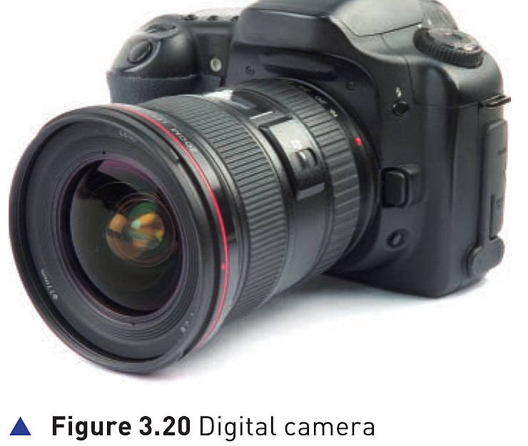
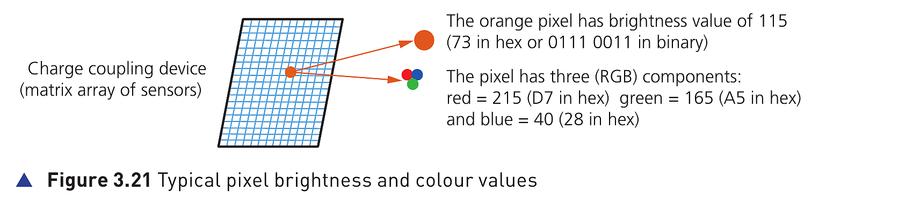
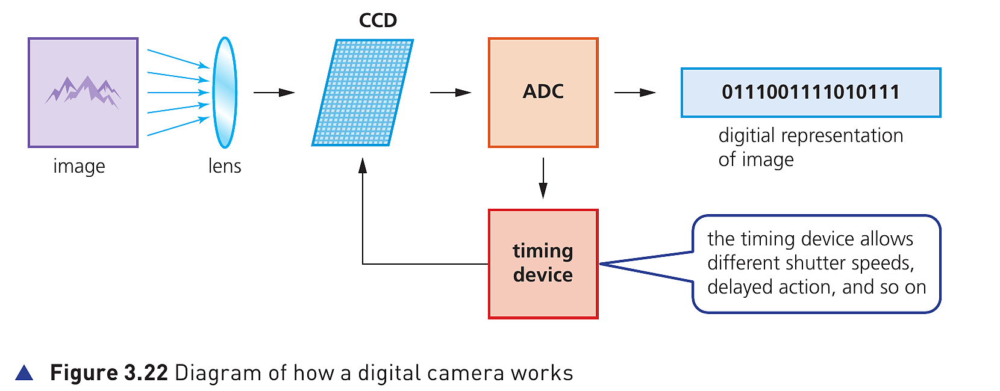

Digital cameras · Hardware P92-P93

Digital cameras have essentially replaced the more traditional camera that used film (胶片) to capture the images.
The film required developing and then printing before the photographer could see the result of their work.
This made these cameras expensive to operate since it was not possible to delete unwanted photographs.
Modern digital cameras simply link to a computer system via a USB port (USB 接口) or by using Bluetooth (蓝牙).
Bluetooth enables wireless transfer of photographic files (照片文件的无线传输).
The key idea is that the image is already digital, so it can be transferred, stored, displayed or deleted without developing film.
These cameras are controlled by an embedded system (嵌入式系统) which can automatically carry out the following tasks:
2^8 or 256 possible brightness levels per pixel, for example brightness level 01110011For example, a shade of orange could be 215 (red), 165 (green) and 40 (blue), giving a binary pattern of 1101 0111 1010 0101 0010 1000, or D7A528 written in hex (十六进制).

Figure 3.21 Typical pixel brightness and colour values
The orange pixel has brightness value of 115, which is 73 in hex or 0111 0011 in binary.
The same pixel also has three RGB components: red 215 (D7), green 165 (A5) and blue 40 (28).
Together, these 7 sub-items describe the complete textbook process from light capture to digital data, colour values, file size and image quality.
Mobile phones have caught up with digital cameras as regards number of pixels.
But the drawback is often inferior lens quality (较差的镜头质量) and limited memory for the storage of photos.
This is fast changing: at the time of writing, many smartphones now have very sophisticated optics and photography software as standard.

Figure 3.22 Diagram of how a digital camera works
The diagram shows the core chain: image -> lens -> CCD -> ADC -> digital representation of image.
The timing device allows different shutter speeds, delayed action and so on.
A complete answer should move in order:
light -> lens -> light-sensitive cell / CCD -> pixels -> electric charges -> ADC -> brightness / RGB values -> digital image
Key terms to use: photodiodes, CCD, pixels, ADC, RGB, JPEG, raw file.